Table of contentsSlide 1
Data Pre-Processing
Data Pre-Processing
Scalable and Accurate OnLine Approach (SAOLA)
Highlighting the relevant features on a map
Correlation Functions
Slide 7
Slide 8
Slide 9
Unbalanced Data: Undersampling & Oversampling
Undersampling & Oversampling
Undersampling & Oversampling
Undersampling & Oversampling
Classification Model
Confusion Matrix
Alexander Burke – SVM Classifier
SVM – Random Over Sampler
SVM – SMOTE
SVM – ADASYN
ROC curve for Random forest using
SMOTE + ENN
Alex Pimenov
MLP intro
ANN parameters
Accuracy is great
ROC curves much better
ROC Curves Summary
|
Author: Alex Pimenov E-mail: pialgi@live.com Homepage: http://alexpimenov.net/ 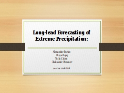 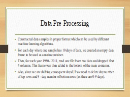 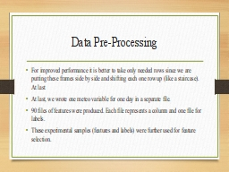 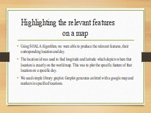 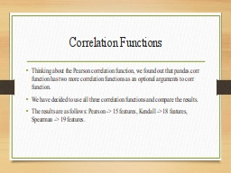 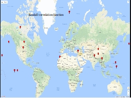 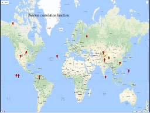 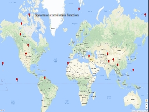 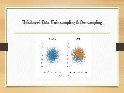 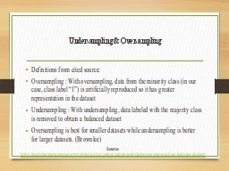 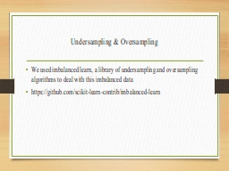 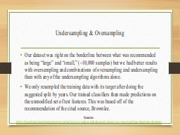 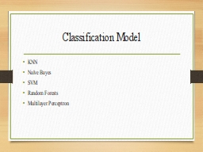 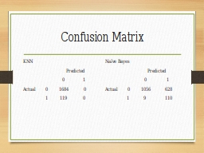 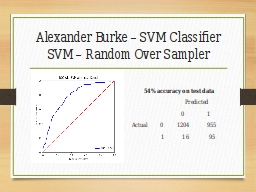 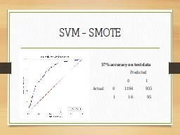 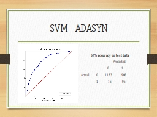 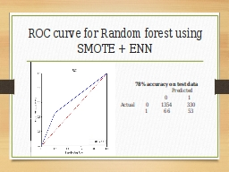 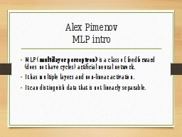 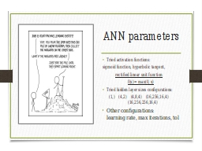 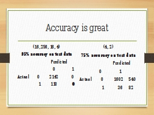 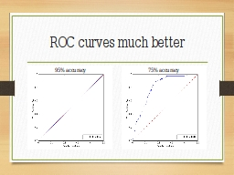 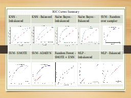 |